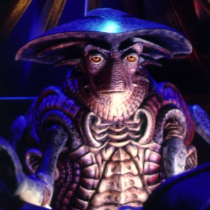

Forums galactiques > Assemblée Galactique : diplomatie officielle > Hiver Eternel
Pages : 1
| N'Tyrr Respect diplomatique : 299  26/07 ETU 01:13 | Score : 4 Détails Deux étoiles s'en sont en aller vers le firmament.
Adieu, compagnons. Nous nous reverrons sous un autre ciel. Bien plus lumineux que celui-çi. Bien lourde est ma peine en ce jour. Avec vous part notre reve. Ce reve qui permis de croiser nos chemins. Mais l'Homme n'est pas encore pret à le suivre. J'essairai tout de meme de le poursuivre. Gardant l'espoir qu'il se réalise. Doux reveurs, nous étions sans terre. Incompatible à cet ère, du ni bien ni mal, seuls des forts et des faibles. Je réalise dorénavent combien vos présences m'étais agréable. Aujourd'hui, vous me laisser seule avec ce fardeau. Je tacherais de ne pas vous décevoir, de faire en sorte que Mithra vive. Que vos mémoires enrichissent son existence. Adieu Rudrig, Adieu Saedon, Amicalement, N'Tyr | ||
| Eraos Respect diplomatique : 2 26/07 ETU 09:47 | Score : 2 Détails Un homme vêtu d’une longue cape, une capuche sur le visage, s’avança sur l’estrade. Il hésita mais après un instant, montra son visage.
A sa vue, Un frisson parcouru certain membres de l’assemblé mais personne ne dit rien. « Camarades, j’ai peut l’habitude de m’adresser en public et n’ai pas la même prestance que la prestigieuse N’Tyrr. Cependant je me lève aujourd’hui avec elle, face à vous, pour saluer deux commandants. De nos jours, combien voyons-nous de membres de cette assemblée ne se lever que pour partir en guerre, accuser et réclamer. Tous ne pensent qu’à leur profit, et rares sont ceux qui ne vivent que par leurs idéaux. Rudrig et Saedon faisaient partit de cette honorable élite, puissent ils reposer en paix. N’Tyrr, vous avez tout mon soutien dans votre quête » Le commandant s'inclinat pour saluer la commandante puis se retirat. | ||
| N'Tyrr Respect diplomatique : 299 27/07 ETU 22:49 | Score : 5 Détails Aveugle à ce vers quoi tu chemine,
Face la montagne du destin, nous ne pourrons nous résigner. Inapte à voir dans l'histoire ombres et errements. Nous finiront par dicerner le subtil. Crois tu en avoir la force? Chaques jours, chaques secondes devra etre un combat contre nous memes. Pour retrouver l'Origine, Ce sont les Immortels qui forment le cours des choses que malgrés toi tu déformes, De nos erreurs, nous apprenons. L'expérience et la trasmition seront nos meilleures alliées Mortel, à la voie qu'ils veulent, tu te conformes, ainsi en a-t-il et en sera à jamais, L'Homme est son propre maitre, la Raison sera à la place de la Destruction. Comme l'exigent les Sages, qui ne meurent. Nous sommes immortels, l'Histoire en sera le témoin... | ||
| N'Tyrr Respect diplomatique : 299 31/07 ETU 23:15 | Score : 2 Détails Ainsi dans ce songe Il est apparut. Le Premier doute.
Mère nous abandonnerais tu? Nous avons eu la force jusqu'ici de croire, mais Ses paroles,l'incertitude. Cette voix, impossible de l'oublier... Impossible de lui succomber... Pourquoi, pour qui se battre? Non... Nous avons foi en toi, foi en tes enfants. Trop de frères sont partis sur l'autre rive. Nous ne pouvons salir leurs mémoires. Nous sortirons encore plus fort de l'obscurité. Les Hommes sauront apporter la réponse... | ||
| N'Tyrr Respect diplomatique : 299 01/08 ETU 14:50 | Score : 2 Détails Les antiques portes du palais Gaura s'ouvrirent sur les champs de cerisiers à présent en fleurs.
En voyant une fleur entamer sa danse tourbillonante avant de se poser sur le sol. N'Tyr ne pouvait s'empecher de la comparer à la vie. Ce sentiment de fragilité, acrocher à sa branche, soumise aux caprice du vent. Elle tombera. De cette descente naitra un fruit,qui à son tour, donnera naissance à un arbre. Et Trois ans s'écouleront avant ses premiers fruits, où le cycle d'une vie. Trois étapes, les Trois étapes avant d'accéder au Salut. La Naissance, l' Epreuve, la Sagesse. Comme aide. Les cinq sens, les cinq formes sensibles de la nature : la totalité du monde sensible. A la recherche de la perfection. Ils nous aideront. Permetant l'équilibre de toutes choses. A savoir la Communion de l'Etre, l'Ame soeur. Ombre et Lumière vibreront à l'unissont. L'amour, unique valeur. Cherchera sa direction parmi les Quatres points cardinaux. L'Etape accompli. L' ouverture à la Quatrième. Le contenant, le carré stable de la Formation. La matière matrice de l'Origine. Réalité toujours naissante, obligant à poursuivre toujours plus loin la Vérité. Se dissociant un jour de nous, mais nous introduira au coeur même de ce qui est. C'était le moment de se mettre en route, de marcher vers l'inconnu. Le point de départ était Gaura. Seule Gaïa savait dans combiens de printemps elle reverrai les cerisiers en fleurs. Sans prévenir personnes, N'Tyr rejoignit son vaisseau. | ||
| Urbs Respect diplomatique : 13  07/08 ETU 15:22 | Score : 4 Détails Urbs contemplait l’immense vide que composait la galaxie, bien a l’abri derrière la vitre protectrice de son croiseur amiral.
Seul le bip de son holoviseur le fit sortir de sa torpeur. La tête de son assistant apparut pour lui délivrer le message Le synode a tranché. Vous avez le feu vert pour tenter le saut d’hyperespace. Bien que l’esprit de Moya nous accompagne. Puissions nous trouver des êtres pacifique au delà de notre système. L’holovisio s’éteignit et Urbs gagna le poste de commandement. Le pilote alluma les engins et le vortex de saut s’ouvrit devant la vaisseau. Le Vortex est stable grant tama s’exprima le pilote Allons-y ¾ de puissance en avant répondit Urbs C’est ainsi que le peuple Erosien partit découvrir la galaxie et des êtres fascinants qui la composent. |
Pages : 1
Forums galactiques > Assemblée Galactique : diplomatie officielle > Hiver Eternel